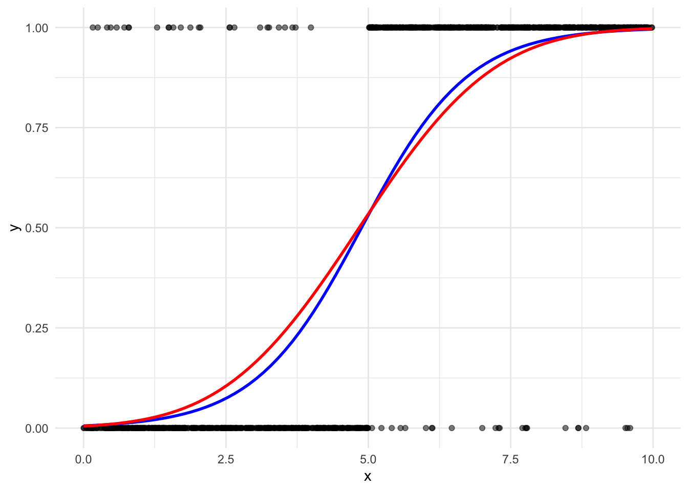
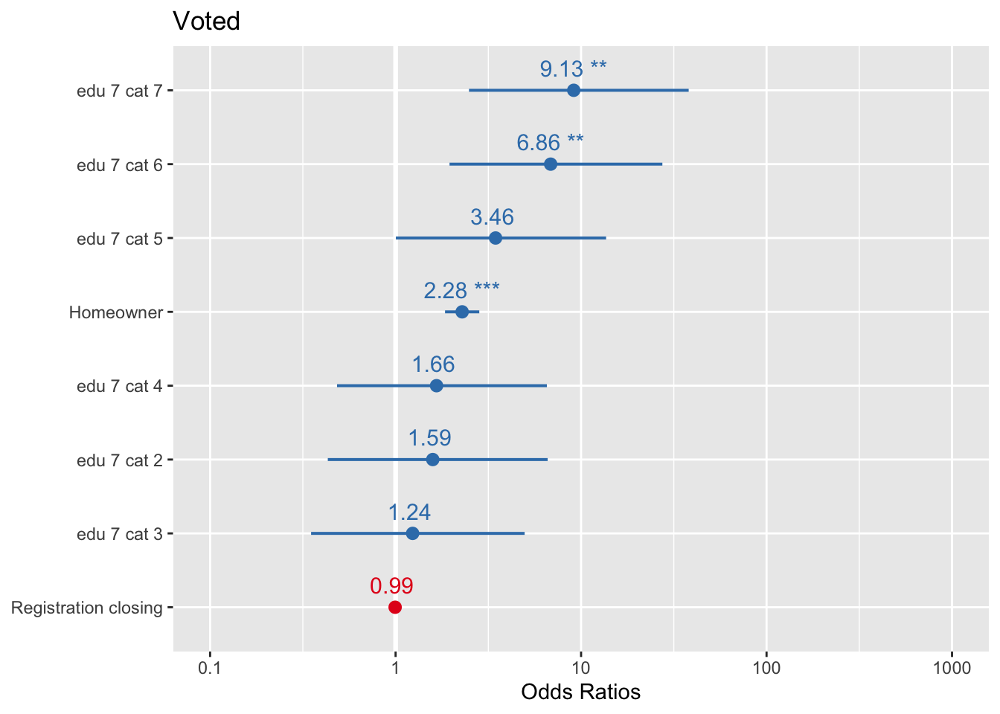

library(tidyverse)
library(rio)
library(skimr)
library(sjPlot)
library(broom)
library(gtsummary)Measuring Marginal Effects on Binary Outcomes
Set up
This section uses the following packages:
Let’s explore marginal and substantive effects using real-world data. How is a person’s decision to vote influenced by the closing date of registration to vote in US elections? Suppose we hypothesize that the further from election day registration closes, the less likely an individual is to vote. We also believe that there are other socio-economic factors that influence a person’s decision to vote for which we need to control. These are their level of education, and whether they are a homeowner.
Let’s explore our data. First, we need to load it in. I will use rio::import().
voters_raw <- rio::import("/Users/harrietgoers/Documents/GVPT729A/class_sets/data/cps00for729a.dta")Next, we need to clean this data up:
voters <- voters_raw |>
transmute(vote = factor(vote, levels = c(0, 1), labels = c("Did not vote", "Voted")),
close,
edu7cat = factor(edu7cat),
homeown = factor(homeown, levels = c(0, 1), labels = c("Not homeowner", "Homeowner"))) |>
labelled::set_variable_labels(vote = "Voted", close = "Registration closing", edu7cat = "Education level", homeown = "Homeownership") |>
drop_na()
head(voters) vote close edu7cat homeown
1 Voted 10 6 Homeowner
2 Voted 29 6 Homeowner
3 Voted 28 4 Homeowner
4 Voted 0 5 Homeowner
5 Voted 25 7 Not homeowner
6 Voted 25 5 Not homeownerIf your categorical variables are stored as numeric data in your dataset, your model will treat them as continuous numeric variables. It will not exclude a base category. This will cause significant problems with your model. Always convert categorical variables to factors.
Now, let’s look at a summary of our data using skimr::skim():
skim(voters)| Name | voters |
| Number of rows | 2188 |
| Number of columns | 4 |
| _______________________ | |
| Column type frequency: | |
| factor | 3 |
| numeric | 1 |
| ________________________ | |
| Group variables | None |
Variable type: factor
| skim_variable | n_missing | complete_rate | ordered | n_unique | top_counts |
|---|---|---|---|---|---|
| vote | 0 | 1 | FALSE | 2 | Vot: 1450, Did: 738 |
| edu7cat | 0 | 1 | FALSE | 7 | 4: 724, 5: 623, 6: 380, 7: 186 |
| homeown | 0 | 1 | FALSE | 2 | Hom: 1665, Not: 523 |
Variable type: numeric
| skim_variable | n_missing | complete_rate | mean | sd | p0 | p25 | p50 | p75 | p100 | hist |
|---|---|---|---|---|---|---|---|---|---|---|
| close | 0 | 1 | 22.29 | 9.87 | 0 | 15 | 29 | 30 | 30 | ▁▁▂▁▇ |
Our dataset contains 2,188 observations and 4 variables. Each observation represents an individual. For each individual, we have information on: whether or not they voted (vote); the number of days before the election that voter registration closes in their state (close); their level of education, broken down into seven categories (edu7cat); and whether or not they own a home (homeown).
Note that we have removed any observations with missing values.
Introduction
Our goal is to make inferences from the sample to the population about how changes in our independent variable of interest, \(x\), influences the probability of success in our outcome of interest, \(y\). We can calculate this effect for each known value of \(x\), or the marginal effect. We can also calculate this effect for a meaningful change in the value of \(x\), or the substantive effect. We will discuss this in the next section.
The marginal effect is the effect of a given \(x_i\) on \(y_i\). In linear models, this effect is constant. However, both logit and probit models are curved. Therefore, the effect of \(x_i\) on \(y_i\) depends on your \(x_i\). As demonstrated in the figure below, the steepest change for both the logit (blue) and probit (red) models occurs around the middle values of \(x_i\).

Let’s take a look at the effect of setting the closing registration date 20 days prior to the election day. We will start with a logistic regression.
Logistic Regression
First, let’s fit our model:
m1 <- glm(vote ~ close + edu7cat + homeown, data = voters, family = binomial(link = "logit"))
tbl_regression(m1, intercept = T)| Characteristic | log(OR)1 | 95% CI1 | p-value |
|---|---|---|---|
| (Intercept) | -0.81 | -2.2, 0.45 | 0.2 |
| Registration closing | -0.01 | -0.02, 0.00 | 0.2 |
| Education level | |||
| 1 | — | — | |
| 2 | 0.46 | -0.84, 1.9 | 0.5 |
| 3 | 0.21 | -1.0, 1.6 | 0.7 |
| 4 | 0.51 | -0.73, 1.9 | 0.4 |
| 5 | 1.2 | 0.00, 2.6 | 0.055 |
| 6 | 1.9 | 0.67, 3.3 | 0.003 |
| 7 | 2.2 | 0.91, 3.6 | 0.001 |
| Homeownership | |||
| Not homeowner | — | — | |
| Homeowner | 0.83 | 0.61, 1.0 | <0.001 |
| 1 OR = Odds Ratio, CI = Confidence Interval | |||
Interpreting the coefficients
These coefficients are difficult to interpret because the model is non-linear. With linear regression, we can interpret the coefficient of \(x_i\) to be the effect of a one unit change in \(x_i\) on the expected value of \(y\). This effect is the same for every value of \(x_i\).
With non-linear logistic regression, we need to transform our coefficients to meaningfully interpret them. Remember, our model estimates the probability of success as:
\[ Pr(Y_i = 1 | X_i) = logit^{-1}(X_i\beta) \]
The coefficients presented above are therefore log odds ratios. We can interpret their statistical significance and their sign. For example, we know that our independent variable of interest, close, is not statistically significant (\(p = 0.232\)). We also know that its effect on an individual’s decision to vote is negative: as days before an election the date of voter registration closes increases, the likelihood that an individual will vote decreases. However, we cannot meaningfully discuss this coefficient (-0.01) without first transforming it.
Predicted probabilities
We can use the inverse logit function to discover the predicted probability that an individual will vote for a given set of predictors.
\[ Pr(y = 1 | X_i) = \frac{e^{\beta_i}}{1 + e^{\beta_i}} \]
Odds ratios
You can interpret the coefficient in terms of its odds ratio. If the probability of success of an outcome is \(p\) and, therefore, the probability of failure is \(1-p\), the the odds of success is \(\frac{p}{1-p}\). Now, dividing two odds by each other gives you the odds ratio. For example, if two outcomes have the odds \(\frac{p_1}{1-p_1}\) and \(\frac{p_2}{1-p_2}\), then these outcomes have an odds ratio of \(\frac{\frac{p_1}{1-p_1}}{\frac{p_2}{1-p_2}}\).
This is particularly useful for comparing the probability of success and failure for a given value of \(x_i\). When the odds ratio is 1, the odds of success are the same as the odds of failure (\(\frac{0.5}{0.5} = 1\)). When the odds ratio is greater than 1, the odds of success are greater than the odds of failure (for example, \(\frac{0.8}{0.2} = 4\)).
To get the odds ratio from the coefficients presented above, we exponentiate them:
\[ e^\beta \]
Exponentiation is the opposite operation to log transformation. So, to get from the log odds ratio presented in the table above to the odds ratio, we simply need to get rid of the log (leaving the odds ratio).
For home ownership:
\[ e^\beta = e^{0.83} = 2.29 \]
This means that a homeowner is 2.29 times more likely to vote than a non-homeowner (our reference category), holding all other variables a fixed values.
For education level 5:
\[ e^\beta = e^{1.2} = 3.32 \]
This means that a person with a level of education in category 5 is 3.32 times more likely to vote than someone with a level of education in category 1 (our reference category), holding all other variables a fixed values. You can calculate this for any education level. The interpretation should always be in reference to your reference category.
Continuous variables are trickier to interpret. For close:
\[ e^\beta = e^{-0.006} = 0.994 \]
This means that a one unit increase in close (increasing the days before the election that registration closes by one day), decreases the odds of voting by a factor of 0.994, holding all other variables a fixed values.
TODO: Check this.
To get the exponential of a number in R, use
exp().
Happily, gtsummary::tbl_regression() can easily present these results for us:
tbl_regression(m1, intercept = T, exponentiate = T)| Characteristic | OR1 | 95% CI1 | p-value |
|---|---|---|---|
| (Intercept) | 0.45 | 0.11, 1.56 | 0.2 |
| Registration closing | 0.99 | 0.98, 1.00 | 0.2 |
| Education level | |||
| 1 | — | — | |
| 2 | 1.59 | 0.43, 6.60 | 0.5 |
| 3 | 1.24 | 0.35, 4.96 | 0.7 |
| 4 | 1.66 | 0.48, 6.54 | 0.4 |
| 5 | 3.46 | 1.00, 13.6 | 0.055 |
| 6 | 6.86 | 1.95, 27.4 | 0.003 |
| 7 | 9.13 | 2.49, 38.0 | 0.001 |
| Homeownership | |||
| Not homeowner | — | — | |
| Homeowner | 2.28 | 1.85, 2.83 | <0.001 |
| 1 OR = Odds Ratio, CI = Confidence Interval | |||
We can also get these results programmatically using broom::tidy():
tidy(m1, exponentiate = T)# A tibble: 9 × 5
term estimate std.error statistic p.value
<chr> <dbl> <dbl> <dbl> <dbl>
1 (Intercept) 0.446 0.655 -1.23 2.18e- 1
2 close 0.994 0.00490 -1.19 2.32e- 1
3 edu7cat2 1.59 0.679 0.679 4.97e- 1
4 edu7cat3 1.24 0.658 0.321 7.48e- 1
5 edu7cat4 1.66 0.645 0.788 4.31e- 1
6 edu7cat5 3.46 0.647 1.92 5.50e- 2
7 edu7cat6 6.86 0.656 2.94 3.33e- 3
8 edu7cat7 9.13 0.679 3.26 1.13e- 3
9 homeownHomeowner 2.28 0.108 7.62 2.55e-14Finally, we can visualise these results using sjPlot::plot_model():
plot_model(m1, sort.est = T, show.values = T, value.offset = .3)
Interpreting the intercept
As usual, the intercept should be interpreted as the expected value when all independent variables are set to 0.
This is simple to interpret in terms of the probability of success. Remember:
\[ Pr(y = 1 | X_i) = \frac{e^{\beta_i}}{1 + e^{\beta_i}} \]
Therefore, for our voter model:
\[ \frac{e^{\beta_0}}{1 + e^{\beta_0}} = \frac{e^{-0.81}}{1 + e^{-0.81}} = \frac{0.445}{1.445} = 0.308 \]
The probability that an individual in a state with election day registration, who has an education level of category 1, and who does not own a house is 0.308 or 30.8%.